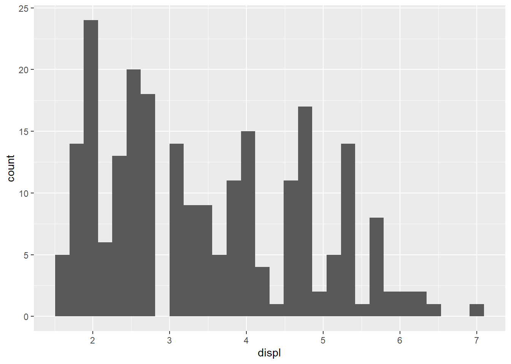
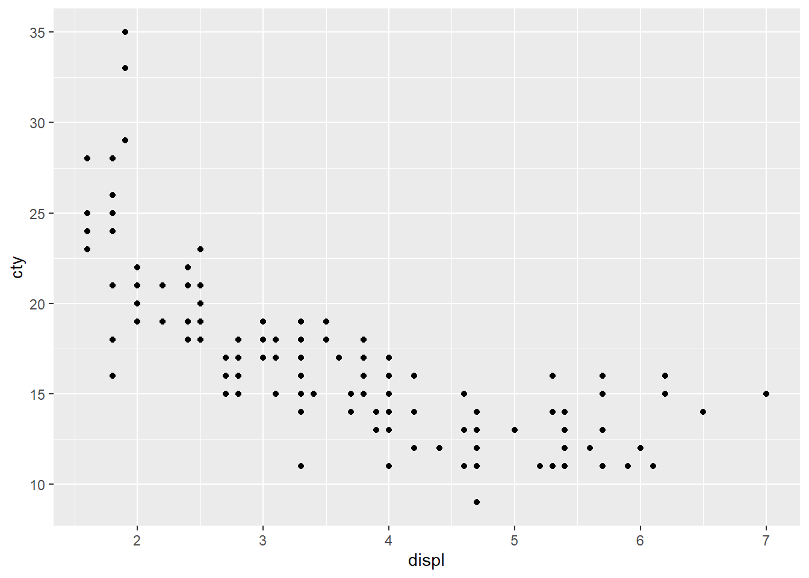
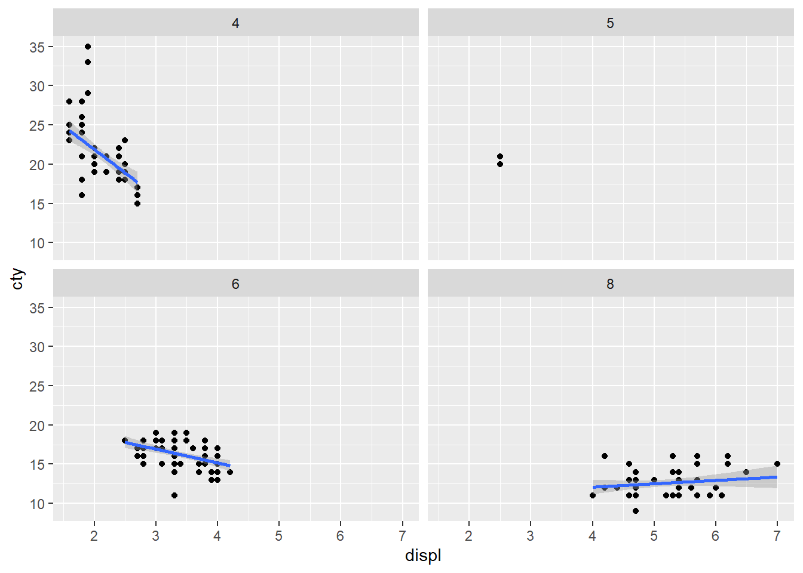
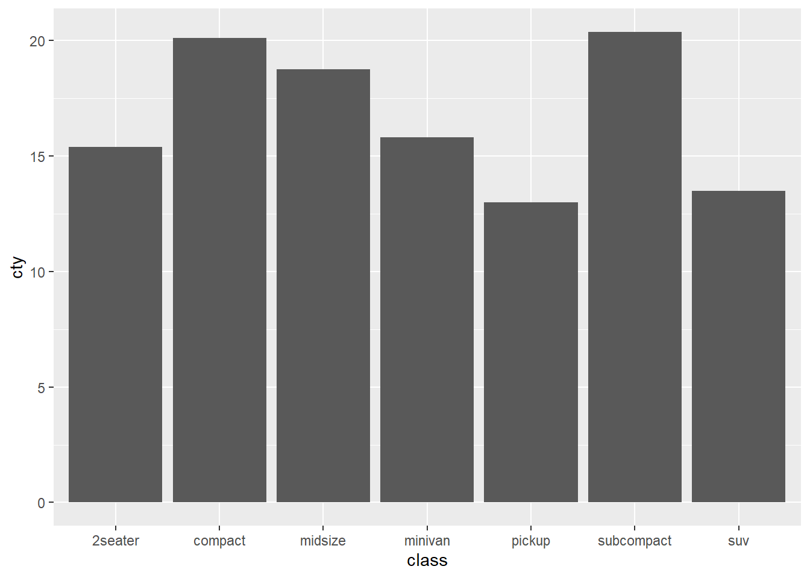
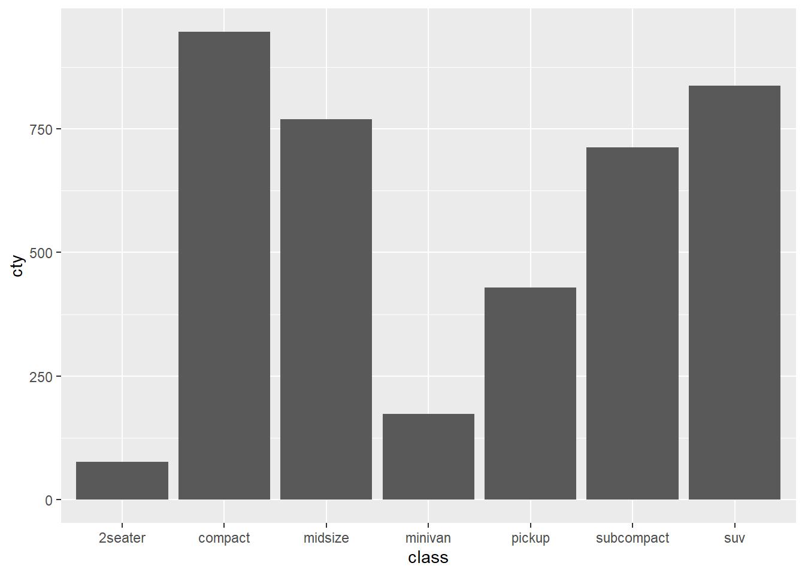
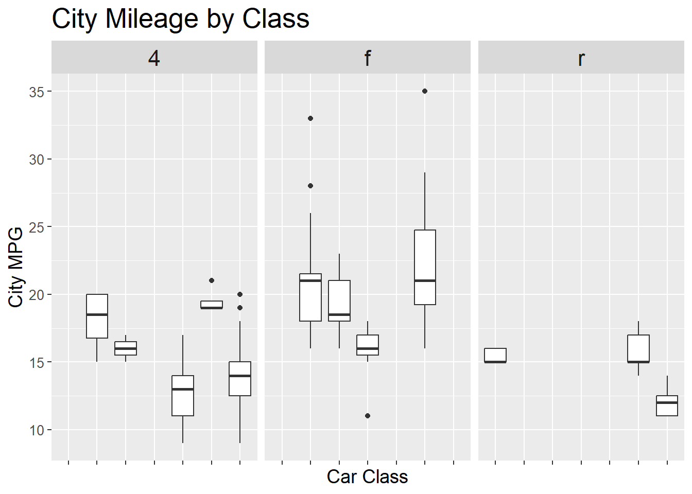

untidy_data <- data.frame(
Name = c("Alice", "Bob", "Carol"),
Japanese = c(80, 90, 85),
Math = c(75, 88, 92)
)
gt::gt(untidy_data)| Name | Japanese | Math |
|---|---|---|
| Alice | 80 | 75 |
| Bob | 90 | 88 |
| Carol | 85 | 92 |
この講義のRプロジェクトを開いていますか？
英数字で名前を付けた本日の講義のファイルを作成しましたか？
tidyverseパッケージを使い、データの加工が出来るggplot2パッケージを使い、データの描画をすることができるRが処理しやすいデータ形式のこと
Hadley Wickhamが提唱した考えで以下の三つの定義がある
1つの列が1つの変数を表す
1つの行が1つの観測を表す
1つのテーブルが1つのデータセットだけを含む
2025年、LINEヤフー本社で行われたJapan.Rに来日されてました！
- Japan.R 2024が紀尾井町オフィスで開催されました!!
untidy_data <- data.frame(
Name = c("Alice", "Bob", "Carol"),
Japanese = c(80, 90, 85),
Math = c(75, 88, 92)
)
gt::gt(untidy_data)| Name | Japanese | Math |
|---|---|---|
| Alice | 80 | 75 |
| Bob | 90 | 88 |
| Carol | 85 | 92 |
| Name | Subject | Score |
|---|---|---|
| Alice | Japanese | 80 |
| Alice | Math | 75 |
| Bob | Japanese | 90 |
| Bob | Math | 88 |
| Carol | Japanese | 85 |
| Carol | Math | 92 |
tidyverseパッケージtidyverse_logo()NA ⬢ __ _ __ . ⬡ ⬢ .
NA / /_(_)__/ /_ ___ _____ _______ ___
NA / __/ / _ / // / |/ / -_) __(_-</ -_)
NA \__/_/\_,_/\_, /|___/\__/_/ /___/\__/
NA ⬢ . /___/ ⬡ . ⬢untidy_data Name Japanese Math
1 Alice 80 75
2 Bob 90 88
3 Carol 85 92#install.packages("tidyverse")
library(tidyverse)
tidy <- pivot_longer(
untidy_data, #データ
cols = c(Japanese, Math), #変形する列
names_to = "Subject", #キーの列の名前
values_to = "Score" #値の列の名前
)
tidy# A tibble: 6 × 3
Name Subject Score
<chr> <chr> <dbl>
1 Alice Japanese 80
2 Alice Math 75
3 Bob Japanese 90
4 Bob Math 88
5 Carol Japanese 85
6 Carol Math 92横長に戻す
untidy <- pivot_wider(
tidy, #データ
names_from = "Subject", #キーの列
values_from = "Score" #値の列
)
untidy# A tibble: 3 × 3
Name Japanese Math
<chr> <dbl> <dbl>
1 Alice 80 75
2 Bob 90 88
3 Carol 85 92dplyrによるデータの操作このパッケージはtidyverseパッケージをインストールしていれば使えます。
このパッケージを使用することで、毎回変数に保存せずデータを操作できたり、二つのデータを結合したできる。
%>%パイプ演算子を使用する。|>など様々なパイプがあるが、とりあえずは%>%だけを覚えていればよい。
パイプ演算子を使ったデータ操作の例（エクセルのデータ処理をRのコードで行うイメージです）
colnames(mpg) [1] "manufacturer" "model" "displ" "year" "cyl"
[6] "trans" "drv" "cty" "hwy" "fl"
[11] "class" mpg %>%
# 列を絞る
dplyr::select(manufacturer, model, displ, year, cyl) %>%
# 行を絞る
dplyr::filter(manufacturer == "audi") %>%
# year列のデータを100で割ったデータを含むcenturyという新しいデータを作成
dplyr::mutate(century = year / 1000) %>%
# データの最初の5行を表示
head(,5)# A tibble: 6 × 6
manufacturer model displ year cyl century
<chr> <chr> <dbl> <int> <int> <dbl>
1 audi a4 1.8 1999 4 2.00
2 audi a4 1.8 1999 4 2.00
3 audi a4 2 2008 4 2.01
4 audi a4 2 2008 4 2.01
5 audi a4 2.8 1999 6 2.00
6 audi a4 2.8 1999 6 2.00filter関数条件を満たす行のみにデータを絞る
指定した値と同じ
mpg %>%
filter(manufacturer == "audi")mpg %>%
filter(manufacturer != "audi")指定した値より大きい（ > ）/小さい（ < ）
mpg %>%
filter(cyl > 6)# A tibble: 70 × 11
manufacturer model displ year cyl trans drv cty hwy fl class
<chr> <chr> <dbl> <int> <int> <chr> <chr> <int> <int> <chr> <chr>
1 audi a6 quattro 4.2 2008 8 auto… 4 16 23 p mids…
2 chevrolet c1500 sub… 5.3 2008 8 auto… r 14 20 r suv
3 chevrolet c1500 sub… 5.3 2008 8 auto… r 11 15 e suv
4 chevrolet c1500 sub… 5.3 2008 8 auto… r 14 20 r suv
5 chevrolet c1500 sub… 5.7 1999 8 auto… r 13 17 r suv
6 chevrolet c1500 sub… 6 2008 8 auto… r 12 17 r suv
7 chevrolet corvette 5.7 1999 8 manu… r 16 26 p 2sea…
8 chevrolet corvette 5.7 1999 8 auto… r 15 23 p 2sea…
9 chevrolet corvette 6.2 2008 8 manu… r 16 26 p 2sea…
10 chevrolet corvette 6.2 2008 8 auto… r 15 25 p 2sea…
# ℹ 60 more rows=を付けると以上（ >= ）/以下（ <= ）を表すmpg %>%
filter(cyl >= 6)NAのデータ以外
filter(is.na(cyl))だとNAのデータを絞り込むmpg %>%
filter(!is.na(cyl))複数条件の指定もできる
mpg %>%
filter(manufacturer != "audi" & cyl >= 6)mpg %>%
filter(manufacturer == "audi" | cyl >= 6)mpg %>%
filter(!(manufacturer == "audi" | cyl >= 6))arrange関数行を並び替える関数
昇順
mpg %>%
arrange(cty)mpg %>%
arrange(cty, hwy)降順
desc関数を使用する。arrange(-列名)でも並び変えられるが、これは数値型にしか使用できないmpg %>%
arrange(desc(cty))select関数列の絞り込みを行う
mpg %>%
select(model, trans)mpg %>%
select(-year)
mpg %>%
select(!year)mpg %>%
select(Changed_model = model, Changed_trans = trans)rename関数を使用するmpg %>%
rename(Changed_model = model, Changed_trans = trans)データの絞り込みなどの加工を行った場合、それを保存したい場合、（新しい）変数に保存する必要がある。一般的に以下の二つの保存の方法があります。
mpg_renamed <- mpg %>%
rename(Changed_model = model, Changed_trans = trans)
mpg %>%
rename(Changed_model = model, Changed_trans = trans) -> mpg_renamed mutate関数列を新しく追加する。同じ列名を指定すれば、既存のデータを上書きすることもできる。
mpg %>%
mutate(cyl_percent = cyl / 100)if_else関数を用いて条件指定を行い、cylが6以上なら「6以上」, それ以外なら「6未満」を含む新たな列を作成。さらに、.after =オプションを用い、列の位置を指定。標準地では、新しく作成された列は、一番最後に追加される。mpg %>%
mutate(cyl_6 = if_else(cyl >= 6, "6以上", "6未満"), .after = cyl)summarize + group_by関数summarise関数は平均値や分散を計算したりなどデータを集計する関数
mutate関数のように、計算したデータを新しい列に格納するmpg %>%
summarise(M = mean(displ))# A tibble: 1 × 1
M
<dbl>
1 3.47mpg %>%
summarise(max = max(displ))# A tibble: 1 × 1
max
<dbl>
1 7group_by関数というグループ化させる関数と組み合わせることがほとんど
mpg %>%
group_by(manufacturer) %>%
summarise(M = mean(displ), .groups = "drop") %>%
head(5)# A tibble: 5 × 2
manufacturer M
<chr> <dbl>
1 audi 2.54
2 chevrolet 5.06
3 dodge 4.38
4 ford 4.54
5 honda 1.71group_by関数を使用したら、必ずsummarise関数の中で.groups = "drop"を指定してグループ化を解除すること。そうしないと予期せぬエラーにつながったりもする。
dplyrによるデータ結合二つのデータセットをそれぞれの共通のデータを基に結合する
疑似データの作成
students <- data.frame(
id = c(1, 2, 3, 4),
name = c("Alice", "Bob", "Charlie", "David")
)
scores <- data.frame(
id = c(1, 2, 3, 4),
score = c(80, 90, 85, 70)
)inner_join関数idというデータを持っている。このキーをもとにデータを結合します。そしてjoined_dataという新しい変数に保存します。students id name
1 1 Alice
2 2 Bob
3 3 Charlie
4 4 Davidscores id score
1 1 80
2 2 90
3 3 85
4 4 70joined_data <- students %>%
dplyr::inner_join(scores, by = "id")
joined_data id name score
1 1 Alice 80
2 2 Bob 90
3 3 Charlie 85
4 4 David 70students <- data.frame(
id = c(1, 2, 3, 4),
name = c("Alice", "Bob", "Charlie", "David")
)
scores <- data.frame(
学籍番号 = c(1, 2, 3, 4),
score = c(80, 90, 85, 70)
)students id name
1 1 Alice
2 2 Bob
3 3 Charlie
4 4 Davidscores 学籍番号 score
1 1 80
2 2 90
3 3 85
4 4 70joined_data <- students %>%
dplyr::inner_join(scores, by = c("id" = "学籍番号"))
joined_data id name score
1 1 Alice 80
2 2 Bob 90
3 3 Charlie 85
4 4 David 70inner_joinでは共通していない変数は削除される# データフレームの作成
students <- data.frame(
id = c(1, 2, 3, 4),
name = c("Alice", "Bob", "Charlie", "David")
)
scores <- data.frame(
id = c(2, 3, 4, 5),
score = c(80, 90, 85, 70)
)students id name
1 1 Alice
2 2 Bob
3 3 Charlie
4 4 Davidscores id score
1 2 80
2 3 90
3 4 85
4 5 70idの2, 3, 4だけがデータとして残っているstudents %>%
dplyr::inner_join(scores, by = "id") id name score
1 2 Bob 80
2 3 Charlie 90
3 4 David 85joinleft_join、right_join関数はそれぞれ左側にあるデータ、右側にあるデータが残る
NA（欠損値）になるstudents %>%
dplyr::left_join(scores, by = "id") id name score
1 1 Alice NA
2 2 Bob 80
3 3 Charlie 90
4 4 David 85students %>%
dplyr::right_join(scores, by = "id") id name score
1 2 Bob 80
2 3 Charlie 90
3 4 David 85
4 5 <NA> 70full_joinだと全部が残るstudents %>%
dplyr::full_join(scores, by = "id") id name score
1 1 Alice NA
2 2 Bob 80
3 3 Charlie 90
4 4 David 85
5 5 <NA> 70データの加工や結合を行い（新しい）変数に保存した後は必ずその中身を確認する必要があります。
ggplot2によるデータの可視化このパッケージもtidyverseパッケージに含まれる。従って、library(tidyverse)でggplot2パッケージも使用できる。
Grammar of Graphicsの思想に基づいている
可視化という作業を複数の工程に分けて考える
データセットの選別、グラフの選択、データをグラフに割り当てる
ステップ・バイ・ステップでパズルのようにグラフを作り上げていく
慣れるととても使いやすいですが、その分覚える関数が多いので慣れるまでが少し大変です。使用する際にその都度調べたりすればよく、コードを暗記する必要はありません。
例（ヒストグラム）
パイプ演算子（%>%）でデータを渡したら後は+でグラフを少しずつ作り上げていきます
mpg %>%
ggplot() +
#aesの中でx軸やy軸を指定。ヒストグラムはx軸の指定だけでよい
geom_histogram(mapping = aes(x = displ)) `stat_bin()` using `bins = 30`. Pick better value `binwidth`.
ggplot(data = mpg, mapping = aes(x = displ, y = cty)) +
geom_point()
# どちらでもOK
#mpg %>%
# ggplot(mapping = aes(x = displ, y = cty)) +
# geom_point()第二段階：直線を重ねる
method = "lm"で線形モデルで直線を推定ggplot(data = mpg, mapping = aes(x = displ, y = cty)) +
geom_point() +
geom_smooth(method = "lm")`geom_smooth()` using formula = 'y ~ x'
第三段階：グループごとに色分け
group =とcolor =で指定を行う。数値のデータはFactor型にすることが必要な場合もあるggplot(data = mpg, mapping = aes(x = displ, y = cty,
group = factor(cyl), color = factor(cyl))) +
geom_point() +
geom_smooth(method = "lm")`geom_smooth()` using formula = 'y ~ x'
第四段階：ファセット
ggplot(data = mpg, mapping = aes(x = displ, y = cty)) +
geom_point() +
geom_smooth(method = "lm") +
facet_wrap( ~ cyl)`geom_smooth()` using formula = 'y ~ x'
ggplot2パッケージに限りませんが、いろいろな関数を試して、失敗してという遊びが必要になります。色々なでーたで様々な関数で作図をして遊んでください。
mpg %>%
group_by(class) %>%
summarise(M = mean(cty)) %>%
arrange(M)# A tibble: 7 × 2
class M
<chr> <dbl>
1 pickup 13
2 suv 13.5
3 2seater 15.4
4 minivan 15.8
5 midsize 18.8
6 compact 20.1
7 subcompact 20.4mpg %>%
ggplot(mapping = aes(x = class, y = cty)) +
geom_bar(stat = "identity")
stat_summary関数で平均値を計算するmpg %>%
ggplot(mapping = aes(x = class, y = cty)) +
stat_summary(geom = "bar", fun = "mean") 
mean_mpg <- mpg %>%
group_by(class) %>%
summarise(mean_cty = mean(cty))
mean_mpg %>%
ggplot(aes(x = class, y = mean_cty)) +
geom_bar(stat = "identity")
mpg %>%
ggplot(mapping = aes(x = class, y = cty)) +
geom_boxplot()
図の文字サイズなどはtheme
size = 数値で指定。単位はpt
x軸の変数名が重なってよく見えない
ggplot(mpg, aes(x = class, y = cty, group = class)) +
geom_boxplot() +
facet_wrap(~ drv) + # 駆動方式でfacet（例: f, r, 4）
labs(title = "City Mileage by Class",
x = "Car Class",
y = "City MPG") +
theme(
plot.title = element_text(size = 20), # タイトルのフォントサイズ
axis.title.x = element_text(size = 10), # x軸ラベル
axis.title.y = element_text(size = 14), # y軸ラベル
axis.text.x = element_text(size = 12), # x軸目盛
axis.text.y = element_text(size = 6), # y軸目盛
strip.text = element_text(size = 22) # facetのラベル（ストリップ）
)
ggplot(mpg, aes(x = class, y = cty, group = class)) +
geom_boxplot() +
facet_wrap(~ drv) + # 駆動方式でfacet（例: f, r, 4）
labs(title = "City Mileage by Class",
x = "Car Class",
y = "City MPG") +
theme(
plot.title = element_text(size = 20),
axis.title.x = element_text(size = 10),
axis.title.y = element_text(size = 14),
axis.text.x = element_text(size = 10, angle = 45, hjust = 1), # ★ ここで傾ける
axis.text.y = element_text(size = 6),
strip.text = element_text(size = 22)
)表示させない場合はelement_blank()
ggplot(mpg, aes(x = class, y = cty)) +
geom_boxplot() +
facet_wrap(~ drv) +
labs(title = "City Mileage by Class",
x = "Car Class",
y = "City MPG") +
theme(
plot.title = element_text(size = 20),
axis.title.x = element_text(size = 14),
axis.title.y = element_text(size = 14),
axis.text.x = element_blank(), # ★ x軸のメモリを非表示に
axis.text.y = element_text(size = 10),
strip.text = element_text(size = 16)
)
ggplotlyでインタラクティブな図を作成ggplot2の図を作成し変数に保存し、ggplotly関数で描画する
図の上にカーソルを置いてみてください
#install.packages("plotly")
gg_mpg <- mpg %>%
ggplot(mapping = aes(x = class, y = cty)) +
geom_boxplot()
plotly::ggplotly(gg_mpg)esquisseパッケージを使用
esquisser(viewer = "browser")を実行すると、ウィンドウが開き、GUIで作図ができる。また、作成した図をRで作成するためのコードも出力することができる。
#install.packages("esquisse")
library(esquisse)
esquisser(viewer = "browser")📚松村・湯谷・紀ノ定・前田（2021）『改訂2版 RユーザのためのRStudio[実践]入門―tidyverseによるモダンな分析フローの世界』技術評論社